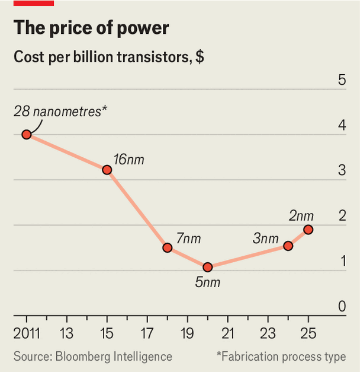

The future of chipmaking looks more like Manhattan than Silicon Valley
Constrained by physics and politics, chipmakers are building upwards
July 9th 2026

Drive around Silicon Valley and you will see surprisingly little skyline. The landscape is dotted with low-rise offices, bungalows and malls. The microchips that gave the region its name are built in much the same way. Millions of low-rise transistors—the electrical switches which instantiate a binary 1 or 0, and thus form the basis of computing—are plonked next to each other on a wafer of silicon.
Over the past half-century, in pursuit of higher performance, chipmakers have learned to shrink their transistors and pack them together ever more tightly. But that trick is running out of road. To keep progress going, firms are starting, at last, to build upwards. The industry’s future will look less like Californian sprawl and more like the vertical cityscape of Manhattan.
On June 16th, at a conference in Hawaii, Samsung Electronics, a South Korean firm, said it had managed to stack two types of transistor on top of each other, allowing it to make significant savings on space. A few days later IBM, an American firm that carries out research into advanced chipmaking, announced a vertical transistor of its own. Intel and TSMC, two other incumbent giants, are pursuing similar technology, which the industry hopes may turn up in commercial products early in the 2030s.
China’s tech champions are chasing similar ideas, but for slightly different reasons. American export controls have cut them off from the manufacturing tools necessary to build the tiniest transistors, forcing them to look for alternative ways of doing things. On May 25th Huawei, the country’s leading chipmaker, announced a technology called “Logic Folding”, which aims to stack entire circuits rather than individual components. Whether to escape the constraints of physics or of American sanctions, it seems the only way to go is up.
Start with physics. Making transistors smaller helps in two ways. One is simply that cramming more of them into a given area allows for more sophisticated chips. The other is that, thanks to a quirk of the device, the smaller a transistor becomes the better it performs—at least, up to a point. Smaller transistors switch on and off more quickly and consume less power while doing so. In 1965, Gordon Moore, who later co-founded Intel, predicted that the number of transistors that could fit on a piece of silicon would double roughly every year (later revised to two). The industry organised itself around what came to be known as Moore’s law.
But by the mid-2000s the transistors started misbehaving. They had become so tiny that current would flow even when they were meant to be switched off, wasting power and generating unwanted heat. Redesigning them bought a bit more time. Flat transistors gave way to slightly more vertical designs called FinFETs, which helped control leakage. FinFETs were followed by gate-all-around (GAA) transistors, the current state of the art.

The redesigns kept shrinking going, but broke its economics. For decades firms could deliver more computing power at a lower cost per transistor. No longer. Bloomberg Intelligence, a data provider, estimates that, in 2024, a billion transistors on TSMC’s N3 process, then the state of the art, cost roughly 40% more than on the previous N5 process (see chart).
One target for the great shift upwards is logic gates, devices built up from transistors. The simplest, an inverter or “NOT” gate, turns a 1 into a 0 or vice versa. It is made of two connected transistors placed side by side. Engineers must leave a gap to prevent the two transistors from electrically interfering with each other.
IBM reckons that by stacking transistors instead, by using a device called a “complementary field-effect transistor” (CFET), it can cut by half the area required for logic gates, while delivering either 50% more performance or 70% better energy efficiency. A CFET stacks one GAA transistor directly on top of another, with an insulating layer ensuring the two play nicely together.
The firm builds its CFETs using a method called sequential manufacturing. The bottom transistor is built first. Then a second silicon wafer is flipped over and bonded to the first, a process rather like putting the top slice of a sandwich onto the bottom. The upper transistor is then built on this second, transferred layer. Intel, Samsung and TSMC, by contrast, favour a “monolithic” approach for their CFETs, in which the two transistors are built above one another on the same silicon substrate.
Serge Biesemans of IMEC, a semiconductor research organisation based in Belgium, says the monolithic option is a better fit for existing manufacturing methods—though it requires modifying tools so that they can handle the unusual geometry of stacked transistors. IBM’s sequential CFETs avoid the need to fiddle with tools, at the cost of extra manufacturing steps.
China’s push into the third dimension is driven by politics. Since 2019 America has barred ASML, a Dutch toolmaker, from selling its extreme-ultraviolet (EUV) lithography machines to China. This makes it very hard for Chinese firms to make chips with the tiniest possible components. So Huawei is trying a different tack.
The firm argues that a chip’s speed depends on two things: how fast its transistors can switch on and off, and how long it takes for a signal to zip through the system. The switching speeds of modern chips are so high—billions of times each second—that designers account for the time it takes for an electrical signal, which moves at a significant fraction of the speed of light, to propagate across one.
Because sanctions have limited the first variable, Huawei is focused on the second. “Logic Folding” splits what would normally be a single chip across two bits of silicon. Those two wafers are then placed face-to-face and joined using ultra-precise bonding. Muhannad Bakir, a professor of engineering at the Georgia Institute of Technology in Atlanta, uses the analogy of two dots on a sheet of paper. Fold the paper so the dots touch and the distance between them almost disappears. Done in silico, that cuts the distances electrical signals need to travel, improving speed.
Huawei reckons Logic Folding can improve energy efficiency by around 40% while also increasing performance. It claims to achieve a transistor density of roughly 238m per square millimetre—mimicking the density of TSMC’s N3 process—despite using older manufacturing tools. Such comparisons should be treated cautiously, since transistor densities are difficult to compare directly across manufacturing processes. They nonetheless illustrate the company’s ambition.
Building tall solves some problems while creating others. One is heat, already one of the biggest limiting factors in chip design. Since the heat-generating volume of a 3D chip will rise more quickly than the surface area available to remove it, the problem is likely to get worse. Chip-design software was written for largely flat layouts and must be rethought. Wafer-to-wafer bonding demands extraordinary precision; defects in either layer can sharply reduce yields. Huawei does not expect large-scale production before around 2031.
For rivals such as TSMC the benefits of adopting Huawei’s approach are not quite worth the costs today. The company reckons it can squeeze one or two more iterations out of the old, low-rise model. Huawei has no such option. The slowing of Moore’s law has made the old ways of doing things less attractive for everyone. For Huawei, as the company itself admits, politics has meant those constraints have arrived earlier, and are more pressing. ■
Curious about the world? To enjoy our mind-expanding science coverage, sign up to Simply Science, our weekly subscriber-only newsletter.